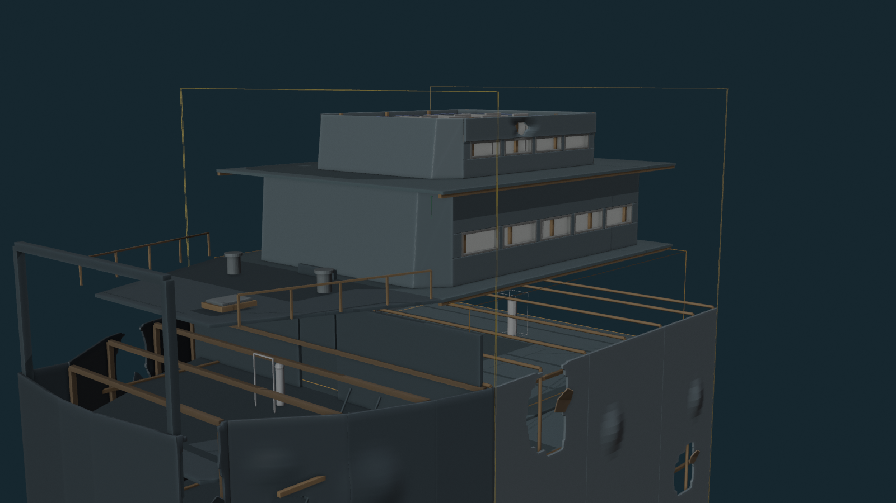
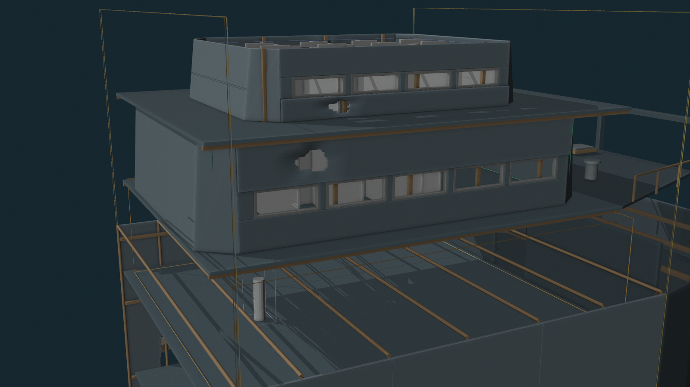
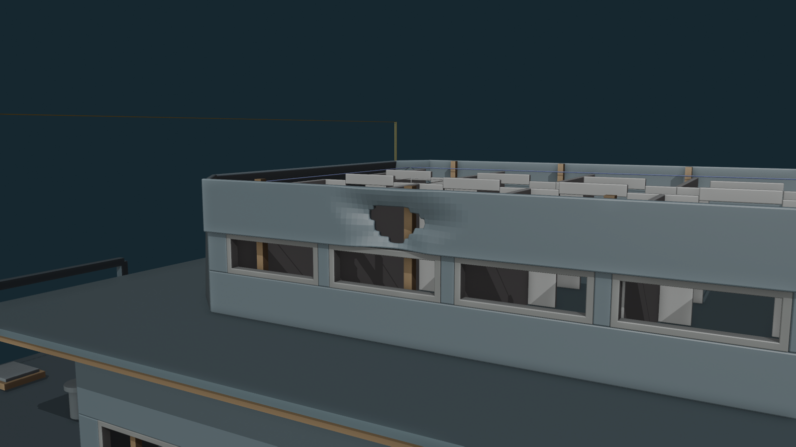
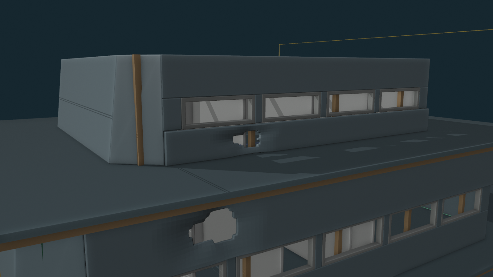
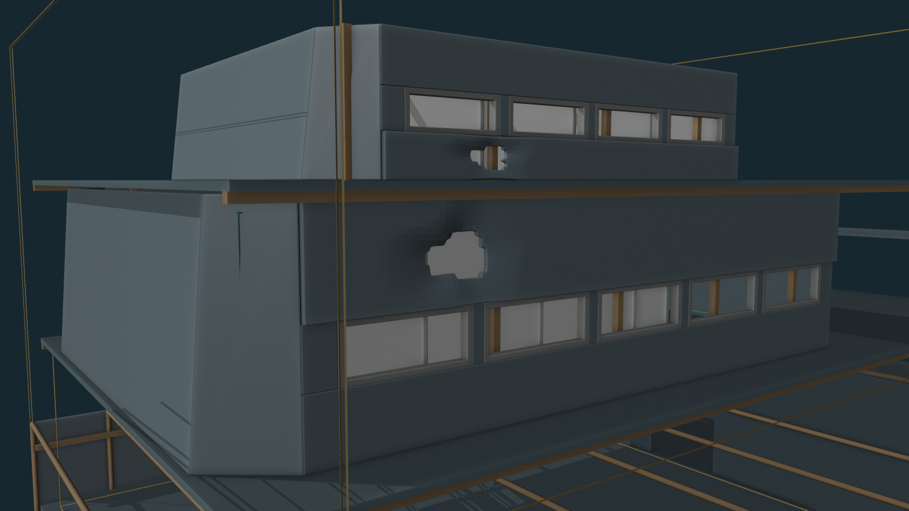

QA PASS
Puncture widths: UNCHANGED.
Puncture heights: UNCHANGED.
Dent depths: UNCHANGED.
Wall profile: UNCHANGED.
Additional smoothing: 2 light passes @ 0.12 applied on top of V13.
Edge break: 22 mm.
B1/B2/B3 routes: CLEAR.
Loose plates: NONE.
Glazing: NONE.
Overall


Softer puncture edges



Current Gate
PASS / FAIL / tweak the rounding. On PASS, I’ll run the fresh structure-only Unreal QA from V14.